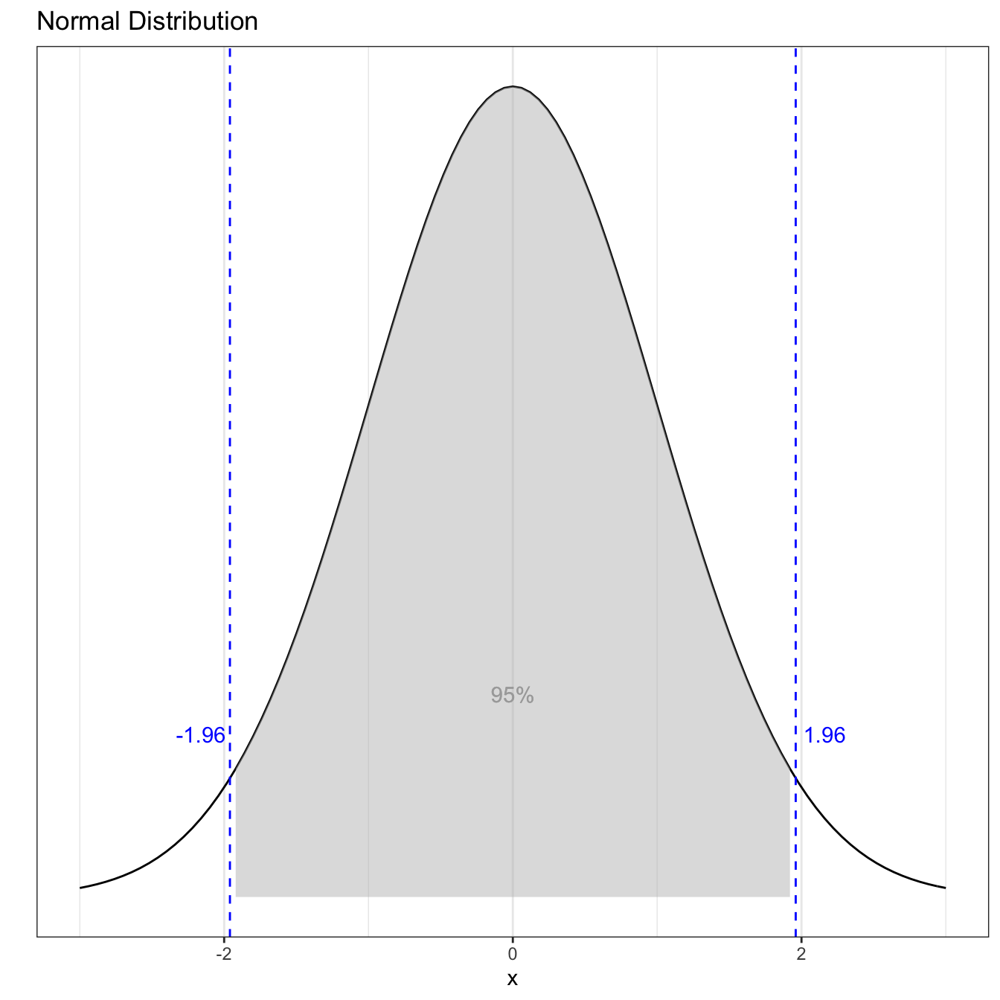

R을 이용한 데이터 분석
시작하기
R 패키지 목록
통계분석
1
데이터 탐색
1.1
데이터 적재
1.2
데이터 훑어보기
1.3
집단별 정보 요약
2
데이터 전처리
2.1
결측치 처리
2.1.1
결측치 확인
2.1.2
결측치 제거
2.1.3
결측치 대체
3
데이터 시각화
기계학습
참고
4
시각화
4.1
확률분포 그래프 그리기
5
데이터 검정
5.1
정규성 검정
6
caret package
6.1
전처리
6.1.1
Creating Dummy Variables
6.1.2
Zero- and Near Zero-Variance Predictors
6.1.3
Identifying Correlated Predictors
6.1.4
Linear Dependencies
6.1.5
The preProcess Function
6.1.6
Centering and Scaling
6.1.7
Imputation
6.1.8
Transforming Predictors
6.1.9
Putting It All Together
6.1.10
Class Distance Calculations
6.2
데이터 분할
6.3
모델 학습
6.4
병렬처리 및 하이퍼 파라메터
6.5
Recipes
6.6
성능평가
Published with bookdown
R을 이용한 데이터 분석
4
시각화
4.1
확률분포 그래프 그리기
